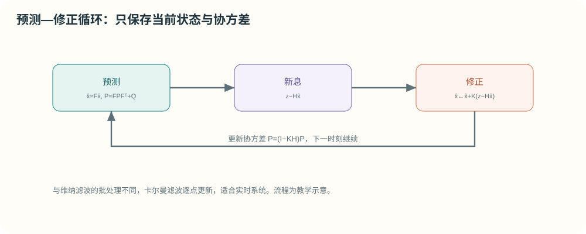
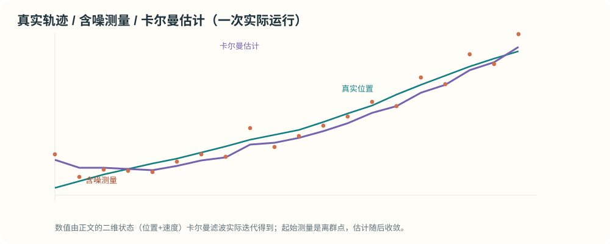
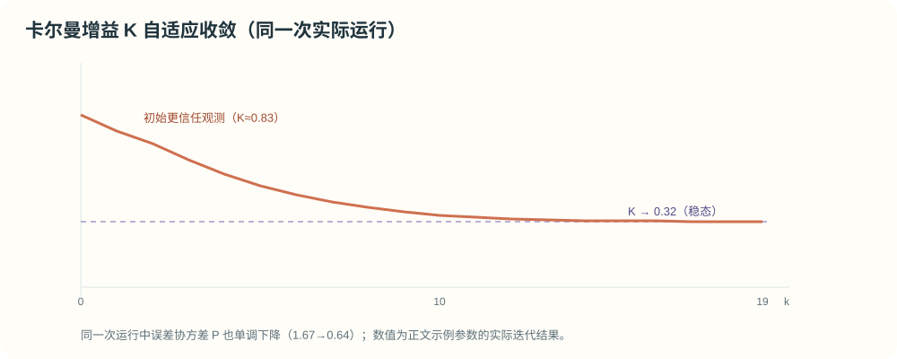
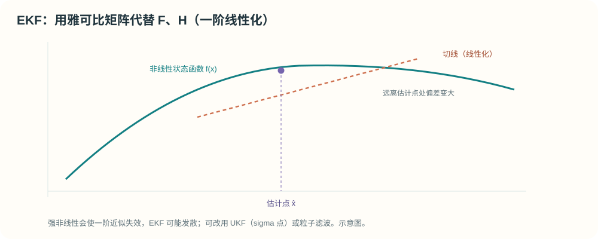

CHAPTER 22 · 统计推断与应用
卡尔曼滤波
把维纳滤波的批量频域解改写成时域递推：只需要当前状态估计与误差协方差，就能在每次观测到来时按最优增益更新。它不要求平稳，天然支持多变量，是导航、跟踪与控制的核心。
- 写出状态方程与观测方程，说明 F、H、Q、R 的含义
- 写出卡尔曼滤波的预测与修正五方程
- 解释卡尔曼增益如何权衡模型与观测，并说明 EKF 的线性化思路
从维纳到卡尔曼：批量到递推
维纳滤波是频域批处理方法：要求信号平稳，需要知道完整的互相关/功率谱，一次解出整条冲激响应，处理前要拿到全部数据。卡尔曼滤波则是时域递推：不要求平稳，只依赖当前状态与误差协方差，每来一个观测就更新一次——无需存储全部历史。
这种“从批量到在线”的转变不只是便捷，还直接开肩了工程可行性。20 世纪 60 年代，阿波罗导航计算机内存有限，难以容纳维纳滤波所需的整段统计信息；卡尔曼滤波的递推结构完美适配了这种受限资源，因而被用于导航系统。

状态空间模型
卡尔曼滤波建立在状态空间模型上，它把“系统如何演变”与“传感器能看到什么”分开描述。状态方程：
其中 F 是状态转移矩阵，wk−1~N(0,Q) 是过程噪声，Q 刻画模型不确定性（如风对飞行器的扰动）。观测方程：
其中 H 把状态映射到观测空间，vk~N(0,R) 是观测噪声，R 刻画传感器误差。
只有这四个矩阵需要先验：F、H 来自物理/几何模型，Q、R 反映模型与传感器的可信度。稳健与否很大程度上取决于 Q、R 的选取（见本章末）。
预测-修正五方程
预测步用状态方程外推，并因过程噪声 Q 而放大不确定度：
修正步先算卡尔曼增益，再用它修正状态与协方差：
其中 zk−H x̂k|k−1 称为新息（innovation）——实际观测与预测观测之差。下一步的预测以本次修正后的 x̂k|k、Pk|k 为起点，如此循环。
卡尔曼增益的直觉
增益 K 是滤波器的“信任旋钮”：预测协方差 Pk|k−1 大（模型不确定）时 K 变大，更信任观测；观测噪声 R 大时 K 变小，更信任模型。极限情形：P≫R 时 K→H⁻¹，几乎完全信任观测；P≪R 时 K→0，几乎完全信任模型。
更妙的是 K 会自适应：初始阶段 P 较大（不知初始状态），K 较大，积极利用观测收敛；随递推进行 P 减小、K 减小，逐渐依赖模型。这种“从信任观测到信任模型”的过渡是卡尔曼滤波优于固定增益滤波的核心。


扩展卡尔曼滤波与变体
经典卡尔曼滤波要求状态方程与观测方程都是线性的。对非线性系统 xk=f(xk−1)+w、zk=h(xk)+v，扩展卡尔曼滤波（EKF）在估计点处做一阶泰勒展开，用雅可比矩阵代替 F、H：Fk=∂f/∂x、Hk=∂h/∂x。

线性化只在一阶近似下有效，强非线性时 EKF 可能发散。替代方案：无迹卡尔曼滤波（UKF）用确定性 sigma 点传播非线性，无需雅可比；粒子滤波用蒙特卡罗采样逼近任意分布，适合强非线性/非高斯，但计算量更大。
选型参考：线性系统用经典卡尔曼滤波（线性高斯下它就是 MMSE 最优）；弱非线性用 EKF；中等非线性且状态维数不高可用 UKF；强非线性或非高斯用粒子滤波。能用简单方法时不要上复杂方法。
可复现核查
下面运行一个二维（位置+速度）卡尔曼滤波器：沿恒速运动产生轨迹与含噪位置测量，验证卡尔曼增益从约 0.83 收敛到约 0.32、误差协方差单调下降、稳态值与图 22.3 一致。纯 Python。
import random
random.seed(22)
dt = 1.0
xt, xe, P = [0.0, 1.0], [0.0, 1.0], [[5.0, 0.0], [0.0, 5.0]]
Q00 = Q11 = 0.01
R = 2.0
Ks, Ps = [], []
for k in range(20):
xt = [xt[0] + dt * xt[1] + random.gauss(0, 0.1), xt[1] + random.gauss(0, 0.1)]
z = xt[0] + random.gauss(0, R ** 0.5)
xp = [xe[0] + dt * xe[1], xe[1]] # 预测
Pp = [[P[0][0] + dt*P[1][0] + dt*(P[0][1] + dt*P[1][1]) + Q00, P[0][1] + dt*P[1][1]],
[P[1][0] + dt*P[1][1], P[1][1] + Q11]]
S = Pp[0][0] + R
K = [Pp[0][0] / S, Pp[1][0] / S] # 增益
innov = z - xp[0]
xe = [xp[0] + K[0]*innov, xp[1] + K[1]*innov] # 修正
P = [[(1 - K[0])*Pp[0][0], (1 - K[0])*Pp[0][1]],
[Pp[1][0] - K[1]*Pp[0][0], Pp[1][1] - K[1]*Pp[0][1]]]
Ks.append(K[0]); Ps.append(P[0][0])
assert abs(Ks[0] - 0.8335) < 0.005
assert abs(Ks[-1] - 0.3188) < 0.005
assert all(Ps[i+1] <= Ps[i] + 1e-9 for i in range(len(Ps)-1))
assert abs(Ps[-1] - 0.638) < 0.005
检查点：K 从 0.834 降到 0.319，P00 从 1.67 单调降到 0.638，与图 22.3 中的曲线一致。测试文件 examples/test_chapter_22.py 复用同一构造。
边界与陷阱
- Q、R 调参决定成败。Q 太小会使滤波器“顽固”地拒绝观测纠正，导致发散；Q 太大又会对噪声过于敏感、估计抖动。常用做法是离线参数扫描，再用新息统计做在线自适应调整。
- 线性高斯是最优前提。经典卡尔曼滤波在“线性 + 高斯”下给出 MMSE 最优；二者任一不成立时，它至多是最优线性估计，精度可能明显下降。
- EKF 依赖线性化。强非线性或初始误差很大时，雅可比近似失效，EKF 可能发散；应考虑 UKF 或粒子滤波。
- 模型与传感器要匹配。F、H 描错了系统或观测几何，再好的调参也无效；应先验证模型。
- 数值与循环性。标准协方差更新式 (22.6) 在病态或高维时可能失去对称正定，需要 Joseph 形式或平方根滤波等数值稳定实现。
至此，估计与滤波的主线告一段落。下一章转向功率谱估计：当功率谱无法解析给出时，如何从有限样本中估计它。
参考与核查依据
- R. E. Kalman, “A New Approach to Linear Filtering and Prediction Problems,” Journal of Basic Engineering, 1960：卡尔曼滤波原始论文。
- G. Welch & G. Bishop, An Introduction to the Kalman Filter, UNC-Chapel Hill, TR 95-041：五方程与直觉讲解。
- D. Simon, Optimal State Estimation: Kalman, H-infinity, and Nonlinear Approaches, Wiley, 2006：EKF/UKF 与数值稳定性。
- MIT OpenCourseWare · Stochastic Processes, Detection and Estimation：状态空间与递推估计。